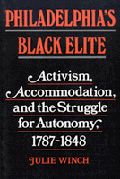

<body bgcolor="#FFFFFF" text="#000000" link="#0000FF" vlink="#CC0000" alink="#CC0000"><center><hr width="350" size="1" align="center" noshade>A study of Philadelphia's black leaders before the Civil War<hr width="350" size="1" align="center" noshade><p><a href="https://cdcshoppingcart.uchicago.edu/Cart/ChicagoBook.aspx?ISBN=9780877225157&&PRESS=temple" target="_top">Buy this book!</a> | <a href="https://cdcshoppingcart.uchicago.edu/Cart/Cart.aspx?PRESS=temple" target="_top">View Cart</a> | <a href="https://cdcshoppingcart.uchicago.edu/Cart/Cart.aspx?PRESS=temple" target="_top">Check Out</a></p><p></p></center><!--none//--><h1>Philadelphia's Black Elite</h1>
<H2>Activism, Accommodation, and the Struggle for Autonomy, 1787-1848</H2>
<h3>Julie Winch</h3>
<P>cloth 0-87722-515-X $44.50, Jan 88, <FONT COLOR=#990033>Out of Stock Unavailable</FONT>
<br>paper 1-56639-088-5 $25.95, Mar 93, <FONT COLOR=#990033>Out of Stock Unavailable</FONT>
<BR> 256 pp
6x9
</P><BLOCKQUOTE><I>"Clearly written and covering the activities of a crisis-oriented, reform-minded minority group during a critical period of transition in the nation's history."</I>
<br>&#151<b>Benjamin Quarles</b><I></I></BLOCKQUOTE>
<p><I>Philadelphia’s Black Elite</I> traces the personalities and the policies of two generations of leaders in one of the largest and most influential free black communities in antebellum America. Moving beyond their commitment to antislavery, Julie Winch examines the range of other causes to which they devoted themselves, from moral reform and civil rights to Caribbean emigration. She also explores the dilemma confronting these early black leaders: while reflecting the needs and concerns of their black constituents, they had to retain the confidence of the white community. <I>Philadelphia’s Black Elite</I> discusses their attempts to reconcile the demands of the two communities and the reasons why many eventually abandoned the struggle.
<p>The leaders of Philadelphia’s black community came from diverse backgrounds: former slaves, freeborn "upper class" socialites, financially secure entrepreneurs, eloquent social reformers. The variety among the leadership added vitality to their efforts, but led to conflict and bitter debate. Winch addresses the political competition between blacks in New York City and Philadelphia, and evaluates the charge that Philadelphia’s black elite were ineffectual leaders. Her study, which begins a full generation earlier than most social histories of the development of black leadership, traces community problems that arose as black Philadelphians inherited leadership positions and shows how some gradually lost sight of the difficulties confronting newly freed and runaway slaves.
<BR>&nbsp;<h2>Excerpt</h2><P>Excerpt available at <a href="http://www.temple.edu/tempress">www.temple.edu/tempress</a></p>
<BR>&nbsp;<h2>Reviews</h2>
<p><I>"Winch's rich portrait of Philadelphia's black leaders and their role in shaping the lives of Northern blacks deserves a close reading."</I>
<br>&#151<b><I>Library Journal</I></b>
<p><I>"In an impressive work on the growth of the black elite of Philadelphia before 1848, Julie Winch, through careful documentation and cogent analysis, helps to put [Du Bois' </I>Philadelphia Negro<I>]...into perspective.... Winch evokes dramatically the emergence of an important Afro-American elite that was </I>sui generis<I>, with goals and strategies peculiarly its own."</I>
<br>&#151<b><I>Journal of American Studies</I></b>
<p><I>"Winch has taken the first steps in rethinking how a larger understanding of black life in the free states not only adds to our understanding of Northern life but changes it as well."</I>
<br>&#151<b><I>Journal of American Ethnic History</I></b>
<p><I>"This is a fine example of black community history."</I>
<br>&#151<b><I>American Historical Review</I></b>
<p><I>"Authoritative and well-researched, and at the same time highly readable&#151a rare and valuable combination."</I>
<br>&#151<b><I>The Philadelphia Inquirer</I></b>
<p><I>"A fresh example of a much more revealing approach to Afro-American history.... Winch provides a much-needed perspective on the complexities, commitments, and conflicting loyalties within this tiny leadership group.... [She] has given us a model for exploring multidimensional and multidirectional dynamics within a minority community."</I>
<br>&#151<b><I>Journal of the Early Republic</I></b>
<p><I>"The book contributes to the understanding of black leadership and the labyrinth of ideologies and schisms characterizing the antebellum period.... The book is an informative exploration of ideologies, tactics, and issues that have relevance even in the twentieth century."</I>
<br>&#151<b><I>Journal of American History</I></b>
<BR>&nbsp;<h2>Contents</h2><P>
<p>Acknowledgments
<br>Introduction: "The Elite of Our People"
<br>1. The Emergence of the Elite, 1787-1822
<br>2. The Elite and African Resettlement
<br>3. Alternatives to Africa: Emigration to the West Indies and Canada
<br>4. The Elite and Slavery
<br>5. The Philadelphia Leadership and the National Convention Movement, 1830-1835
<br>6. The American Moral Reform Society and Its Opponents: The Second Phase of Conventionism
<br>7. Political Change and Racial Violence, 1830-1848
<br>8. The Elite in 1848
<br>Epilogue: The New Activists
<br>Notes
<br>Bibliography
<br>Index
</P><BR>&nbsp;<H2>About the Author(s)</H2>
<P><b>Julie Winch</b> is Assistant Professor of Black Studies at the University of Massachusetts, Boston.</P>
<BR><H2>Subject Categories</H2>
<p><A HREF="/tempress/history.html" TARGET="_top">History</a>
<BR><A HREF="/tempress/african.html" TARGET="_top">African American Studies</a>
<BR><A HREF="/tempress/philly.html" TARGET="_top">Philadelphia Region</a>
</p>
<p align="center"><a href="https://cdcshoppingcart.uchicago.edu/Cart/ChicagoBook.aspx?ISBN=9780877225157&&PRESS=temple" target="_top">Buy this book!</a> | <a href="https://cdcshoppingcart.uchicago.edu/Cart/Cart.aspx?PRESS=temple" target="_top">View Cart</a> | <a href="https://cdcshoppingcart.uchicago.edu/Cart/Cart.aspx?PRESS=temple" target="_top">Check Out</a></p><p><font face="Arial" size="1"><a href="copyright.html" onMouseOver="window.status='Web Copyright Policy';return true;" onMouseOut="window.status=''" title="Web Copyright Policy">&copy;</a> 2015 <a href="http://www.temple.edu" target="new" onMouseOver="window.status='Link to Temple University home page';return true;" onMouseOut="window.status=''" title="Link to Temple University home page">Temple University</a>. All Rights Reserved. http://www.temple.edu/tempress/titles/459_reg.html</font></p>